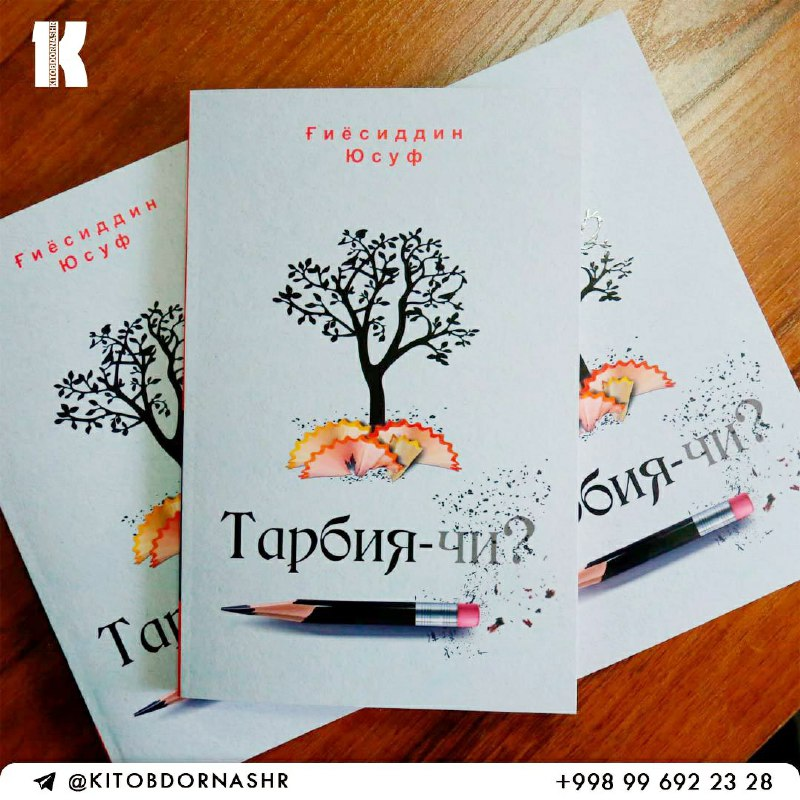

Ким фарзанди келажакда бахтли, саодатли яшашини истайди?

Фарзанднинг келажакдаги фаровон ҳаёти ҳозир унга бераётган тарбиянгиздан шаклланади.👨👩👧👦
Охирги 100 йилда тарбияга, умуман олганда, фарзандларга бўлган назар ўзгарган.
Сабаби ҳозирги ҳаёт тарзи ўзгарган.
Ҳаётимиз борган сари техник гатжетларга тўлиб боряпти, болалар эса ижтимоий тармоқларда кўп вақт ўтказяпди.⌨️⌨️
Ҳа, боланинг келажаги учун ўқиш, тилларни билиш, муомалани билиш, ҳозирги ҳаёт ритмига мослашувчанлик муҳим.
Лекин буларнинг ҳаммасига унинг назарлари, қадриятларидан шаклланган ички дунёси асос бўлиб хизмат қилади.🌟
Фарзанднинг ўзига бўлган муносабати ота-онанинг тарбиясидан шаклланади. Фарзандингизни келажагига ҳисса қўшишни истасангиз,
Ғиёсиддин Юсуфнинг янги "Тарбия-чи" номли китобини ўқиб чиқишни тавсия қиламиз.📖
Китоб ҳақида кўпроқ маълумотни шу ердан билиб олишингиз мумкин.
❤Umid Hudoyberdiev 🙂
🕊Яқинларга улашинг